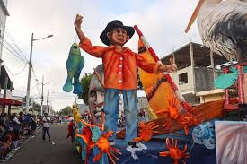
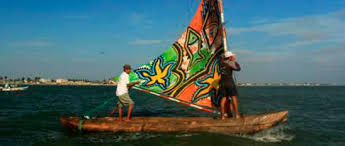
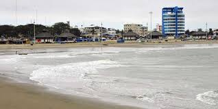
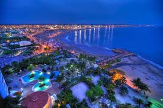

La vistas de general villamil playas es unas de las hermosas cuidades y playas del ecuador que muestran unas de las vista de las playas como su fauna y su flora ,su gatronomia, su bellos paisajes y sus lindos lugares de donde podes vistar y tambien difruta de sus aventuras
es tambien una de las grandes cuidades que tambien los representan los feriados que son los dias con mas visitas , tambien los dias que su fundacion que son los dias donde podes ver y difrutar como por ejemplo :sus platos tipicos,su paisaje,su hospedaje,etc.
para tambien es una de las ciudades aventurera de la playa que representan sus lugares mas visitados como la plaza ,su hospedajes ,y su playa ya que tambien es unas de las mas increible galeria de la vista
 |
 |


  |